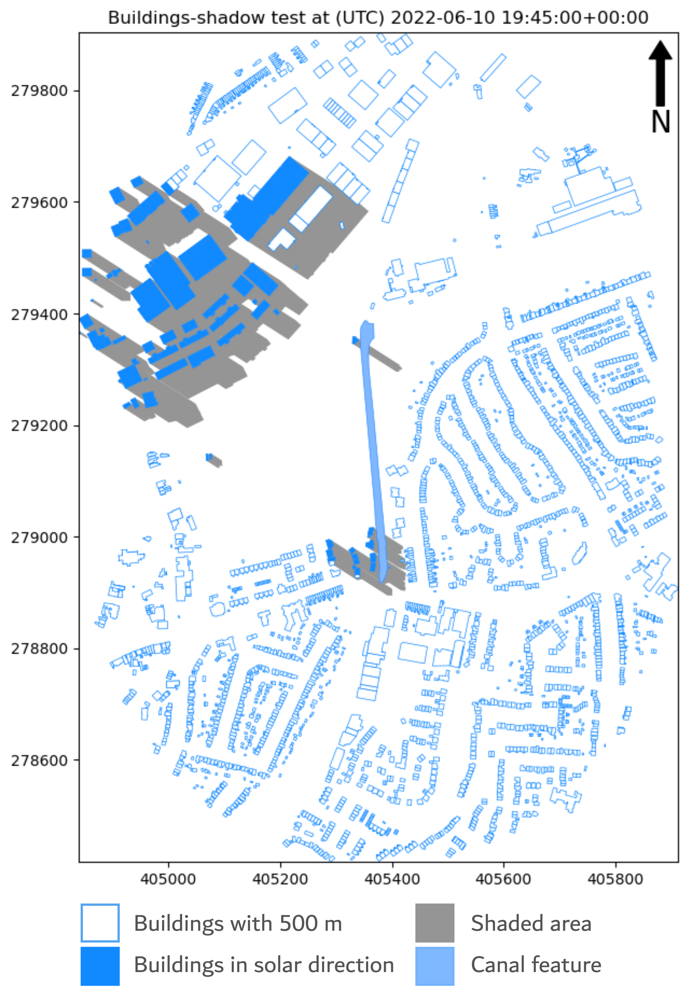
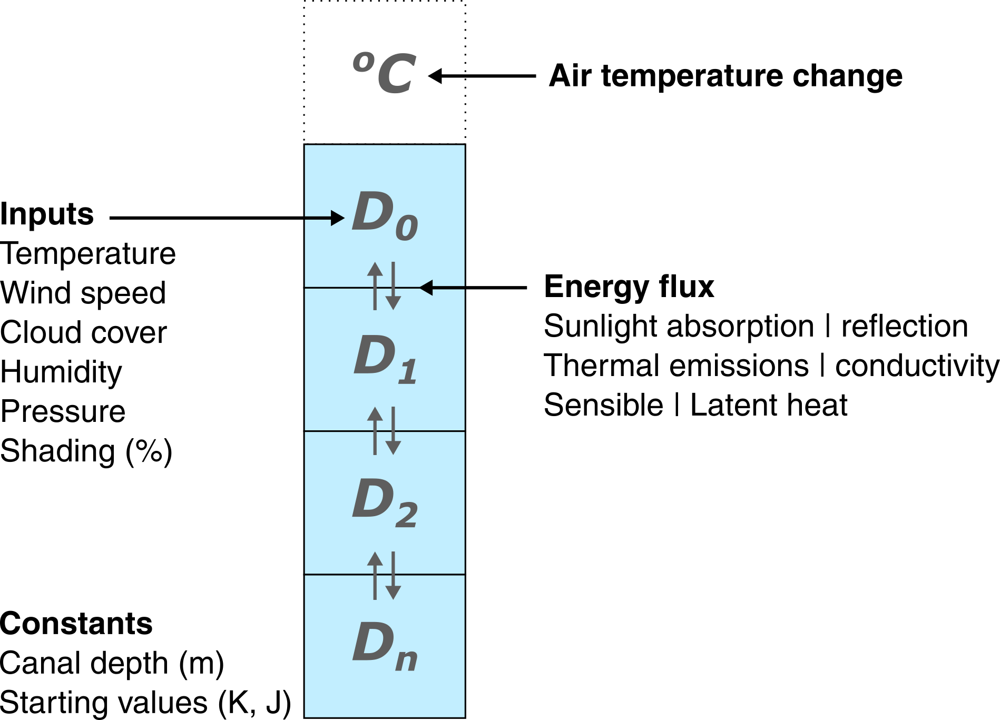
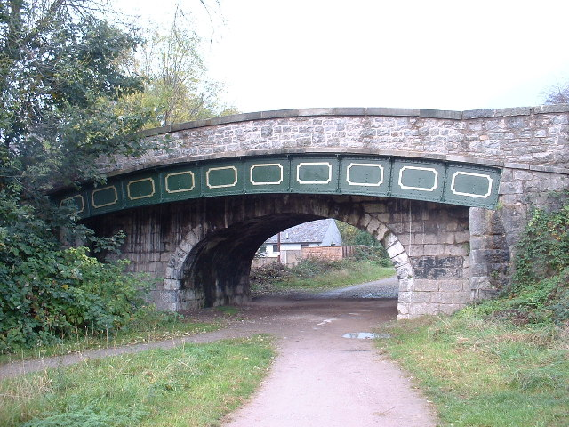

Make this Notebook Trusted to load map: File -> Trust Notebook
Model
Inputs
Although we are not running the model today, it is important to understand the data that are used as model inputs.
Canals
The model is run on the urban canal network, which is extracted from the Ordnance Survey MasterMap Topography layer. Waterways were extracted and filtered to urban areas, and the key attributes used in the model are:
- the area of each continguous canal section e.g., separated by locks or bridges.
- the depth of each section, based on published canal draughts i.e., the vertical distance between the waterline and the lowest part of the hull, a minimum required water depth for safe navigation.
Can you think of any issues with these attributes?
Environment
Alongside canal attributes, some characteristics of the environment are also included, such as:
- the degree of shading of the canal by nearby buildings, also obtained from the MasterMap Topography layer. As the model is run, the shading proportion of the canal is modelled at each time step i.e., is it fully, partially or not shaded?
For example, here is an output for a feature of the Worcester and Birmingham canal (wabc_38) at 2022-06-10 (19:45:00). At this time step, the canal is 22% shaded:

What characteristics of the environment are missing from the model?
Weather and radiation {weather}
To predict the effects of the canals on surrounding air temperature, the analysis first models changing water temperature and energy storage through time. This is based on weather parameters from OpenWeather, including:
- temperature (°C)
- humidity (%)
- wind speed (m/s)
- cloud cover (%)
Have a look at the data provided by OpenWeather. Can you think of any limitations with this data source?
Incoming solar radiation (W/m2) is also modelled for each time step, based on the canal location, solar altitude, and cloud cover. Below is an example of the solar radiation values for central Manchester (53.477, -2.244; excluding cloud cover) for a 10-day period from 2022-06-01:
Approach
Based on the above inputs, water temperatures are modelled incorporating evaporative, sensible (conductive and convective) and radiative (sunlight and thermal) heat fluxes between the water and the outside environment. Some heat fluxes that aren’t included are heat flux due to friction (\(Q_{fc}\)) or the advective heat flux (\(Q_a\)), which you can read about in Webb and Zhang (1997).
Why have these heat fluxes been excluded from the model?
To model these fluxes, the water column is split into different layers and at each time step, fluxes of energy are modelled between each layer and between the water surface and the surrounding environment. This is quite complicated.

To complicate matters further, modelling of water (and its effects) is only one part of the model, which also considers the temperature and energy storage of a reference surface.
This is necessary because we need a baseline for comparison. The canal might have an effect on the surrounding air temperature (i.e., cooling or warming by x°C), but how do we assess the significance of this effect without comparing it to other materials e.g., concrete, asphalt, greenspace?
In our model, we use concrete as the reference material, which is a reasonable assumption for an urban environment, and could be the ultimate fate of some of our canals, an example below:

Validation
While the model is quite complex and every effort has been made to represent the key processes involved, it doesn’t mean it’s correct! Before we can use the model, we need to assess its performance and should remember that:
“All models are wrong, but some are useful”
– George Box
“Truth is much too complicated to allow anything but approximations.”
– John von Neumann
With those caveats, we can go ahead and assess the validity of the model using water temperature data provided by the Canal and River Trust, which is available for a small number of sites across England and Wales.
One of those sites is on the Liverpool and Leeds Canal (feature
lalc_73), which you can inspect below.
Shown below is a comparison of the measured water temperatures (CRT) and the modelled water temperatures.
Inspect the plot. What is your appraisal of model performance?
We can also calculate model residuals (\(modelled - measured\)), as shown below:
How does model performance vary across the year?
Using the above data, we can calculate some simple summary statistics, such as the mean absolute residual (\(abs(modelled-measured)\)) which is 1.01°C, with p25 of 0.57°C and p75 of 1.58°C.
What factors might account for under- or over-prediction of water temperature? Consider the inputs, model assumptions…